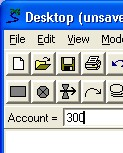
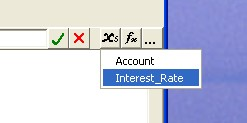
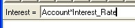
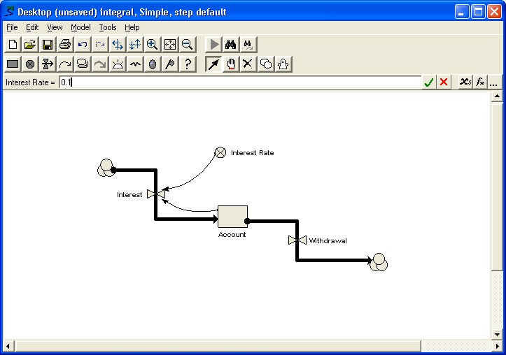

Step 3: Adding initial values, parameter values and equations
1. Make sure you are in Pointer mode
·
Click on the Pointer button in
the toolbar. 
2. Assign an initial value for the compartment

· Click on the compartment labelled Account.
· Enter the value 300 into the equation bar.
· Click on the green tick mark.
3. Add the interest rate equation
· Click on the flow labelled Interest.
· Variables Account and Interest_Rate are now listed as influences upon Interest. These influences are visible by clicking on the xs button. Selecting an influence from the drop-down list, places the text in the equation bar.

· Enter the expression Account*Interest_Rate into the equation bar, either by selecting each variable in turn or by typing. Be sure to use an underscore rather than a space in Interest_Rate.
· Click on the green tick mark.

4. Assign a value for the withdrawal flow
· Click on the Withdrawal flow.
· Enter the value 10 in the equation bar.
· Click on the green tick mark.
5. Assign the value for interest rate
· Click on the variable labelled Interest Rate.
· Enter the value 0.1 in the equation bar.
· Click on the green tick mark.

Notice that every component of the model diagram is now black, rather than red as it was before. This indicates that every component has been mathematically specified, and so the model is ready for running: Simile has enough information to work out the flows, and thus to update the amount of money in your bank account forward through time.